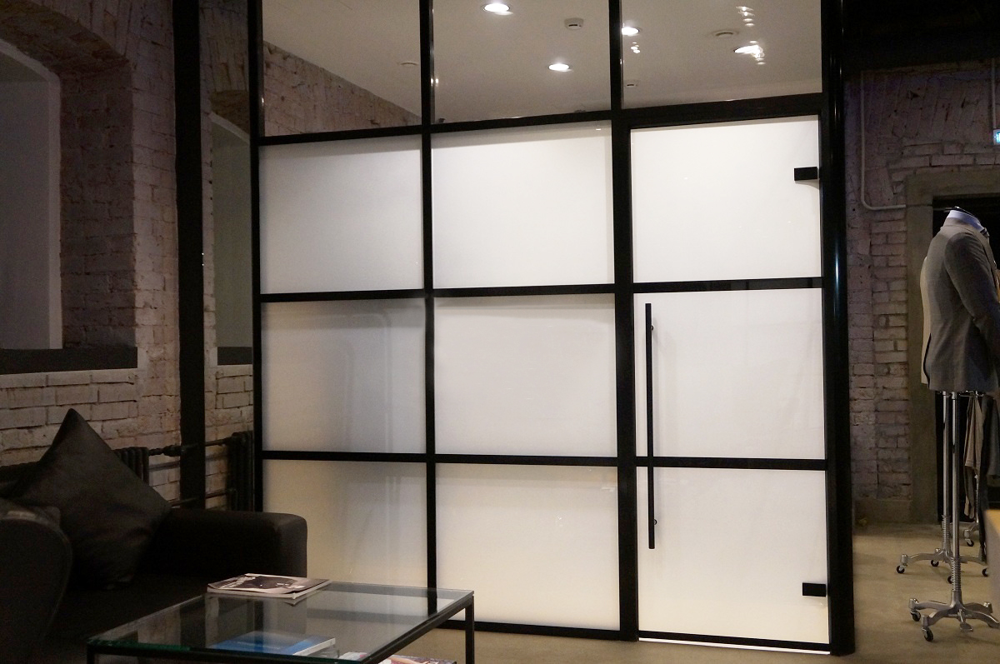
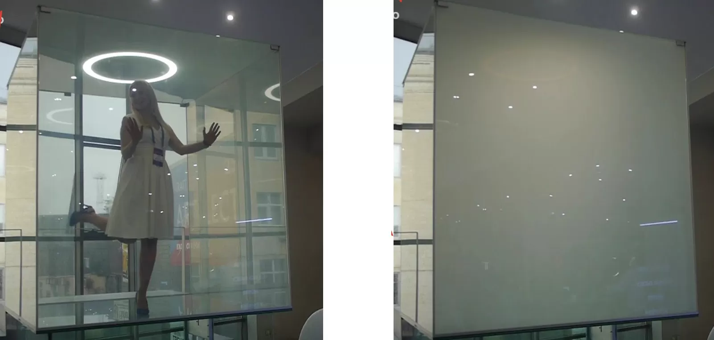

Смарт стекло в розничной торговле
Смарт-стекло STEKLO-BURG: решения для розничной торговли и fashion-индустрии
Говоря об инновациях в области светопрозрачных конструкций, мы хотели бы уделить
внимание
решениям для розничной торговли. Для данного сегмента рынка особо востребован не только
премиальный дизайн, но и экономичность в эксплуатации, поэтому изделия из смарт-стекла
STEKLO-BURG станут оптимальным решением для многих владельцев бутиков и магазинов.
Примерочная со smart-стеклом
Традиционно в качестве примерочных в магазинах одежды используются типовые непрозрачные
кабинки, которые ограничены не только по площади, но и по вариантам расположения зеркал.
Для брендовых бутиков, магазинов свадебного платья компания «Стекло Бург» разработала
технологическое решение, которое значительно лучше отвечает задачам премиального
сегмента.
Использование стекла с переменной прозрачностью является удачным маркетинговым ходом для
магазина: технические ноу-хау позволяют выделиться среди конкурентов в своём сегменте.
Благодаря использованию перегородок на базе смарт-стекла Private Glass, вы имеете
возможность моделировать пространство умных примерочных как Вам угодно, вне зависимости
от типовых габаритов стандартных примерочных кабин. Техническое решение, представленное
на фото, позволило зонировать пространство примерочной таким образом, что внутри
помещаются настенное и напольное зеркало, а также диван для удобства клиента. Также вам
могут быть предоставлены решения на базе раздвижных перегородок из смарт-стекла, которые
дадут ещё больше вариантов трансформации пространства.
Кроме того, энергопотребление смарт-стекла не превышает стандартные издержки владельца
помещения на электроэнергию.

Смарт-куб: новое слово в индустрии моды и развлечений
Кубическая кабина из смарт-стекла может стать интересным решением для бутика,
автосалона, магазина электроники и иных заведений.
Цельностеклянные конструкции с использованием смарт-стекла ещё не стали распространённым
техническим решением, именно поэтому Ваш собственный магазин или ночной клуб может
заказать уникальное изделие с премиальным дизайном.
Подобная конструкция полностью технически автономна, именно поэтому она может быть
установлена в наиболее наглядном для посетителей месте по Вашему усмотрению.
